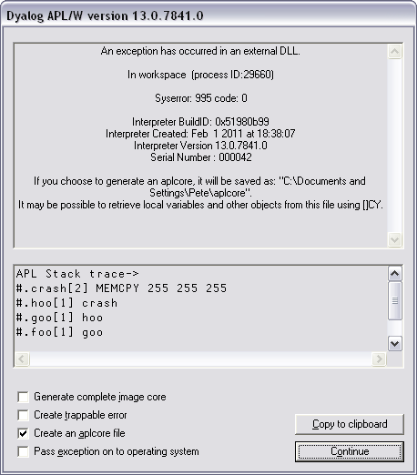

Dyalog APL will display a System Error Dialog and (normally) terminate in one of two circumstances:
In these circumstances, APL saves an aplcore file which may be sent to Dyalog for diagnosis. The default name and location of the aplcore file may be specified by the AplCoreName parameter. This parameter may also be used to suppress the generation of the aplcore file.
From version 13.2 onwards useful information, including (where possible) the SI stack at the point where the aplcore was generated is written to the end of aplcore files; the section begins with the string
'=================== Interesting Information'.
When you )SAVE your workspace, Dyalog APL first performs a workspace integrity check. If it detects any discrepancy or violation in the internal structure of your workspace, APL does not overwrite your existing workspace on disk. Instead, it displays the System Error dialog box and saves the workspace, together with diagnostic information, in an aplcore file before terminating.
A System Error code is displayed in the dialog box and should be reported to Dyalog for diagnosis.
Note that the internal error that caused the discrepancy could have occurred at any time prior to the execution of )SAVE and it may not be possible for Dyalog to identify the cause from this aplcore file.
If APL is started in debug mode with the –Dc, -Dw or –DW flags, the Workspace Integrity check is performed more frequently, and it is more likely that the resulting aplcore file will contain information that will allow the problem to be identified and corrected. It is also possible to enable or alter the debugging level from within APL using the SetDFlags methods; Dyalog support will direct the use of this feature when necessary.
Non-specific System Errors are the result of Operating System exceptions that can occur due to a fault in Dyalog APL itself, an error in a Windows or other DLL, or even as a result of a hardware fault. The following system exceptions are separately identified.
| Code | Description | Suggested Action |
|---|---|---|
| 900 | A Paging Fault has occurred | As the most likely cause is a temporary network fault, recommended course of action is to restart your program. |
| 990 & 991 | An exception has occurred in the Development or Run-Time DLL. | |
| 995 | An exception has occurred in a DLL function called via ⎕NA | Carefully check your ⎕NA statement and the arguments that you have passed to the DLL function |
| 996 | An exception has occurred in a DLL function called via a threaded ⎕NA call | As above |
| 997 | An exception has occurred while processing an incoming OLE call | |
| 999 | An exception has been caused by Dyalog APL or by the Operating System |
Objects may often (but not always) be recovered from aplcore using )COPY. Note that because (by default) the aplcore file has no extension, it is necessary to explicitly add a dot, or APL will attempt to find the non-existent file aplcore.DWS, i.e.
)COPY aplcore.
If APL crashes and saves an aplcore file, please email the following information to support@dyalog.com:
If the problem is reproducible, i.e. can be easily repeated, please also send the appropriate description, workspace, and other files required to do so.
The System Error Dialog illustrated below was produced by deliberately inducing a system exception in the Windows DLL function memcpy(). The functions used were:
∇ foo [1] goo ∇ ∇ goo [1] hoo ∇ ∇ hoo [1] crash ∇ ∇ crash [1] ⎕NA'dyalog32|MEMCPY u u u' [2] MEMCPY 255 255 255 ∇

| Item | Parameter | Description |
|---|---|---|
| Generate complete image core | CreateAplCoreonSyserror | Dumps a complete core image with the User Mode Process Dumper (a Microsoft tool) - see below. |
| Create Trappable Error | If you check this box (only enabled on System Error codes 995 and 996), APL will not terminate but will instead generate an error 91 (EXTERNAL DLL EXCEPTION) when you press Dismiss. | |
| Create an aplcore file | CreateAplCoreonSyserror | If this box is checked, an aplcore file will be created. |
| Pass exception on to operating system | PassExceptionsToOpSys | If this box is checked, the exception will be passed on to your current debugging tool (e.g. Visual Studio). |
| Copy to clipboard | Copies the contents of the APL stack trace window to the Clipboard. |
The Generate complete image core option attempts to execute [SYSDIR]\userdump.exe, where [SYSDIR] is the windows system directory (typically c:\windows\system32, and userdump.exe is the User Mode Process Dumper, a Microsoft tool that can be downloaded from the following url (which you may copy from Winhelp and paste into a browser):
http://www.microsoft.com/downloads/details.aspx? FamilyID=e23cd741-d222-48df-9cd8-28796f414256&DisplayLang=en
The process creates a file called dyalog.core in the current directory. This file contains much more debug information than a normal aplcore (and is much larger than an aplcore) and can be sent to Dyalog Limited (zip it first please). Alternatively the file can be loaded into Visual Studio .Net to do your own debugging.
If you are using Visual Studio, the following procedure should be used to debug your own DLLs when an appropriate Dyalog APL System Error occurs.
Ensure that the Pass Exception box is checked, then click on Dismiss to close the System Error dialog box.
The system exception dialog box appears. Click on Debug to start the process in the Visual Studio debugger.
After debugging, the system exception dialog box appears again. Click on Don't send to terminate Windows' exception handling.
This parameter allows you to prevent APL from displaying the System Error dialog box (and terminating) when an exception caused by an external DLL occurs. The following example illustrates what happens when the functions above are run, but with ErrorOnExternalException set to 1.
⎕←2 ⎕NQ'.' 'GetEnvironment' 'ErrorOnExternalException' 1 foo EXTERNAL DLL EXCEPTION crash[2] MEMCPY 255 255 255 ^ ⎕EN 91 )SI crash[2]* hoo[1] goo[1] foo[1]